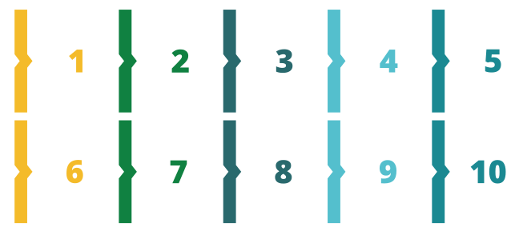

Conforme mencionado anteriormente, para alguns elementos organizacionais das UBS, os gestores e os
trabalhadores
possuem baixa governabilidade. Contudo, em espaços de diálogo propostos por você com a equipe de saúde e a
comunidade, talvez seja possível a implementação de estratégias que possam romper ou diminuir as barreiras
identificadas, colaborando para melhoria do atributo acesso de primeiro contato (acessibilidade).
Clique nos números e conheça as propostas.

Mapear lideranças
comunitárias e espaços comunitários para potencializar o acesso aos serviços de saúde e o
fortalecimento de ações intersetoriais nas questões relacionadas a transporte, violência e
outros.
1
x
Identificar espaços na comunidade que possam ser disponibilizados para oferta de serviços de
saúde.
2
x
Avaliar e sugerir às instâncias superiores a possibilidade de adesão a programas
estratégicos do
Ministério da Saúde, a exemplo do “Saúde na Hora”, que permite contemplar horário de almoço,
período noturno e sábados para atendimento.
3
x
Organizar escalas entre as equipes para atendimento no horário do almoço, além da
programação de
atividades específicas aos sábados a fim de contemplar populações que possuem maior
dificuldade
de acesso, a exemplo do “Sábado do Homem”.
4
x
Implantar conselho local de saúde para discussão, planejamento e intervenção sobre o
processo
saúde-doença-cuidado.
5
x
Divulgar leque de serviços da unidade de saúde, por meio de informações simples, com
linguagem
clara e acessível.
6
x
Estabelecer mecanismos de comunicação com a população para retirada de dúvidas, tais como
serviços de ajuda, WhatsApp, canais telefônicos, endereço eletrônico, murais informativos e
outros.
7
x
Definir, dialogar e pactuar com os trabalhadores as atribuições para garantir a
flexibilidade
das agendas das equipes, inclusive incorporando dispositivos como Acesso Avançado.
8
x
Ofertar dispositivos diversos para agendamento de consultas, tais como telefone ou WhatsApp.
9
x
Realizar pesquisas de satisfação a fim de avaliar a fila para marcação da consulta e o tempo
na
sala de espera para atendimento.
10
x